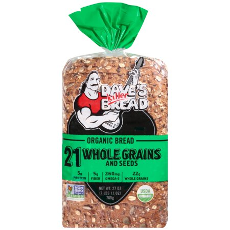
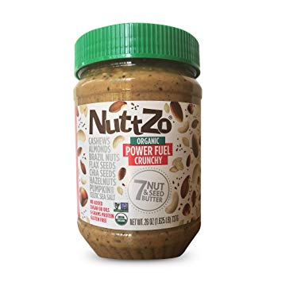

my name is Samantha but most people call me Sam. some of my favorite things are ↴
 small plants
"dave's killer bread 21 whole grains and seeds"
almond butter
twitch.tv
chemistry
tea
i consider myself to be mostly introverted; therefore, i find joy in doing things like drawing and reading (ﾉ´ヮ´)ﾉ*: ･ﾟ
(the book that i am currently reading is "Harry Potter and the Deathly Hallows" but i have not gotten around to finishing the book for the past two years..)
evidently, my favorite book would be the entire series of Harry Potter. my favorite movie, on the other hand, would have to be Your Name (君の名は).
moving on, i feel like it is important to note that i am honestly one of the most awkward people you will ever meet. meeting new people, and keeping up a normal interaction, is my KRYPTONITE.
there is currently nothing extravagant happening in my life.. most of the time, you can find me sleeping, doing schoolwork, or listening to lofi music. these things go hand in hand—as i get a meek 4 hours of sleep daily because i stay up to finish my assignments while, concurrently, listening to lofi o(╥﹏╥)